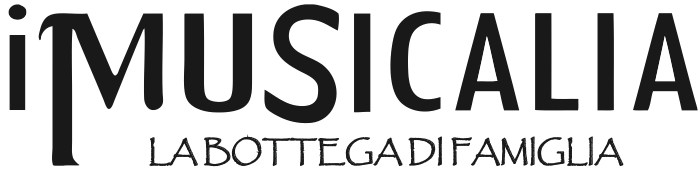

<div class="modal-dialog">
    <div class="modal-content">
        <div class="modal-header">
            <button type="button" class="close" data-dismiss="modal" aria-hidden="true">
                
                <span class="glyphicon glyphicon-remove"></span>
            </button>
            <h3 class="modal-title">Trenta e trenta ancora</h3>

        </div>
        <div class="modal-body">
            <div class="text-center">
                
                <div class="caption text-center"><b>Amerigo e Marcello Ciervo</b></div>
            </div>
            <hr>
            <p class="text-center">
                Dal 1976 continuiamo a registrare, a catalogare, a studiare, a far rivivere, nelle riproposte discografiche e
                in concerti live, i frammenti sonori della storia sociale e culturale di una terra, il Sannio beneventano,
                che è diventata, per noi, il paradigma di un’avventura senza fine.
            </p>
            <p class="text-center">
                Abbiamo sempre condiviso, con chi voleva, il nostro progetto, ma, nel contempo, l’abbiamo sempre
                protetto da chi voleva appropriarsene per farlo diventare un’altra cosa.
                Non ci siamo mai curati di gare o concorsi perché abbiamo la presunzione di ritenere che il nostro lavoro abbia
                comunque un senso che, per noi, è importante in quanto tale: sottoposto com’è, ormai da lungo tempo, ai giudizi di chi
                viene ai concerti, compra i nostri dischi o ci contatta per laboratori o seminari.
            </p>
            <p class="text-center">
                Certo non c’interessa il giudizio di chi, semmai, avrà pure qualche responsabilità della condizione di inferiorità in
                cui la musica di tradizione ancora si trova, al di là delle abbuffate di pizziche e tammurriate...
            </p>
            <p class="text-center">
                Abbiamo le nostre idee politiche, le manifestiamo anche pubblicamente ma ai rappresentanti delle istituzioni
                abbiamo sempre e soltanto offerto una proposta culturale, comunque sempre preservata da ogni strumentalizzazione.
                Il progetto rimane quello di sempre: concretizzare in ricerche, dischi, concerti, seminari e lezioni presso scuole,
                in Italia e all’estero, il bisogno e l’impegno – insieme culturali e politici - di doversi riappropriare di una storia,
                di voler far rivivere le radici di una comunità, di ricostruire delle trame con i fili spezzati della memoria, di contribuire
                a una riproposta non folkloristica e di maniera - un tempo ad uso di turisti di bocca buona, oggi ad uso e consumo dei portatori
                di una certa idea-basic del "folk" - di ciò che allora, negli anni Settanta, si chiamava "musica popolare" e che oggi preferiamo chiamare
                <i>"musica delle radici che diventa futuro"</i>.
            </p>
            <p class="text-center" >
                Sull’esempio e grazie alle straordinarie lezioni di Roberto De Simone, Diego Carpitella e Michele L. Straniero.
            </p>
            <p class="text-right">
                <b><i>Amerigo&Marcello Ciervo</i></b>
            </p>
        </div>
    </div><!-- /.modal-content -->
</div><!-- /.modal-dialog -->
